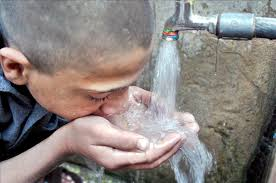

CONTAMINACIÓN DEL PLANETA

 7
7¡Cuidemos el planeta!
"Vivimos en la tierra como si tuviéramos otra a la que ir." -Terry Swearingen.

"Vivimos en la tierra como si tuviéramos otra a la que ir." -Terry Swearingen.
La contaminación es uno de los problemas más grandes que existen en el planeta y el más peligroso, ya que al destruir La Tierra y su naturaleza original, termina por destruirnos a nosotros mismos. La contaminación es la introducción de agentes biológicos, químicos o físicos a un medio al que no pertenecen. Se entiende por contaminación atmosférica a la presencia en el aire de materias o formas de energía que impliquen riesgo, daño o molestia grave para las personas y bienes de cualquier naturaleza, así como que puedan atacar a distintos materiales, reducir la visibilidad o producir olores desagradables.
Los tipos de contaminación más importantes son los que afectan a los recursos naturales básicos: el aire, los suelos y el agua. Algunas de las alteraciones medioambientales más graves relacionadas con los fenómenos de contaminación son los escapes radiactivos, el smog, el efecto invernadero, la lluvia ácida, la destrucción de la capa de ozono, la eutrofización de las aguas o las mareas negras. Existen diferentes tipos de contaminación que dependen de determinados factores y que afectan distintamente a cada ambiente. Después de tratar el tema de contaminación en general se tratarán los principales tipos de contaminacion:
Es la alteración de sus características naturales principalmente producida por la actividad humana que la hace total o parcialmente inadecuada para el consumo humano o como soporte de vida para plantas y animales (ríos, lagos, mares, etc.).
Causas: – Arrojo de residuos sólidos domésticos e industriales. – Descarga de desagües domésticos e industriales. – Arrojo de aceites usados. – Derrames de petróleo.

La contaminación del aire es la que se produce como consecuencia de la emisión de sustancias tóxicas. Puede causar trastornos tales como ardor en los ojos y en la nariz, irritación y picazón de la garganta y problemas respiratorios. Bajo determinadas circunstancias, algunas substancias químicas que se hallan en el aire contaminado pueden producir cáncer, malformaciones congénitas, daños cerebrales y trastornos del sistema nervioso, así como lesiones pulmonares y de las vías respiratorias. A determinado nivel de concentración y después de cierto tiempo de exposición, ciertos contaminantes del aire son sumamente peligrosos y pueden causar serios trastornos e incluso la muerte.
Causas: – Humos de los tubos de escape de los carros. – Humos de las chimeneas de las fábricas. – Quema de basuras. – Polvos industriales (cemento, yeso, concentrado de minerales, etc.). – Incendios forestales. – Erupciones volcánicas.

La contaminación del suelo se refiere a la contaminación del suelo por medio de exceso de fertilizantes, productos químicos, insecticidas, herbicidas, pesticidas, etc provocan contaminación del suelo en la disminución de la calidad del suelo y es causada por la erosión del suelo, el exceso o déficit de humedad, disminución de la nutrientes para las plantas o microorganismos del suelo, y la fluctuación de la temperatura alta.
Las principales fuentes de contaminación del suelo incluyen – la deforestación, los incendios forestales, la erosión del suelo, la erupción volcánica, el uso excesivo de fertilizantes químicos, pesticidas, herbicidas, etc, y el vertido de residuos industriales y urbanos.
Efectos de la contaminación del suelo: La contaminación del suelo afecta negativamente a los seres humanos como a los animales, ya que da lugar a disminución de la producción agrícola y la consecuente escasez de alimentos. Los fertilizantes químicos y pesticidas que se utilizan para aumentar la producción agrícola no sólo degradan el suelo debido a su uso excesivo, sino que también entran en la cadena alimentaria y afectan la salud de las personas que consumen el alimento.

Se define por la presencia de altos decibelios en algún lugar determinado. La causa principal de la contaminación acústica es la actividad humana, como el transporte, la construcción de edificios y obras públicas, la industria...
Consecuencias: Los efectos producidos por el ruido pueden ser fisiológicos, como la pérdida de audición, y psicológicos, como la irritabilidad exagerada, alteraciones del sueño o disminución de la capacidad mental de concentración.
Es aquella que destruye visualmente el paisaje natural (ya sea rural o urbano), debido a la presencia de torres de transporte de energía eléctrica, vallas publicitarias en carreteras y avenidas, vertederos y minas a cielo abierto.
Se refiere a la que se deriva de la dispersión de materiales radiactivos, como el uranio enriquecido, el cual se utiliza en instalaciones médicas o de investigación, reactores nucleares de centrales energéticas, munición blindada con metal aleado con uranio, submarinos, satélites artificiales, etc. Esta contaminación se puede producir por un accidente (como el ocurrido en Chernóbil), por el uso y por la disposición final deliberada de los residuos radiactivos.

Se produce debido a la emisión de fluidos a elevada temperatura y es causada por la influencia humana. Se ha demostrado que este aumento artificial de la temperatura es uno de los causantes del actual cambio climático que existe en la actualidad.

En los medios antes indicados se introduce un determinado compuesto químico. La contaminación se puede encontrar en materiales esenciales para la vida humana, como el agua, la tierra, los alimentos, el aire...
Se refiere a la existencia de una iluminación artificial excesiva, la cual provoca una interferencia para el trabajo de los observatorios y astrónomos. Esta contaminación se da durante la noche en las cercanías de las ciudades. De ahí que los observatorios y centros de investigación de astronomía se construyan lejos de las grandes urbes.
Producida principalmente por aguas contaminadas, como las aguas servidas, subterráneas o superficiales, ocasionando enfermedades en los animales y en el ser humano.
Es aquella que se refiere a la transferencia incontrolada o no de material genético en las plantas. Esta contaminación afecta al patrimonio genético de una población o de una especie y puede afectar gravemente a la biodiversidad genética.
Muchos son los países que están buscando una buena solución a este problema global, aunque parece que les cuesta mucho llegar a un acuerdo que satisfaga a todos los actores del escenarios. De mientras, las consecuencias se siguen viendo, empeoran y más se destruyen los hábitats naturales que un día hicieron de este planeta un planeta verde y azul. Mientras los gobernantes deciden cuáles son las medidas que más les favorecen y que se pueden aplicar para reducir la contaminación en nuestro mundo, muchas son las especies que mueren cada día y esto sin tener en cuenta las otras consecuencias de la contaminación que ahora vamos a detallar.
Problemas para la salud: la contaminación hace que las personas estemos cada vez más expuestas a padecer problemas cardiovasculares, con el grave peligro que esto entraña para nuestra salud y vida.
Debilitamiento de la capa de ozono: la capa de ozono es la que nos protege de los rayos del Sol, los cuales pueden llegar a ser mortíferos sin esta capa. la consecuencia de este debilitamiento es que cada vez nos protege menos y, por ende, cada vez tenemos una mayor temperatura en el planeta. Esto no solo hace que cada vez haya más zonas desiertas en las que es imposible vivir, sino que también hace que el hielo en los polos se deshaga y mueran muchas especies por ello. No hace falta mencionar que esto hace subir indudablemente el nivel del mar y que, de seguir así, muchas ciudades costeras se verán arrasadas, quedándose sin playas y sin zona costera.
La contaminación afecta al suelo y al agua: la contaminación al medio ambiente afecta al agua y al suelo, lo que hace que cada vez haya más especies en peligro de extinción. El agua no es potable en una gran cantidad de sitios y el suelo para la siembre no tiene los nutrientes necesarios, lo que hace que cada vez se pueda cultivar menos y que el número de cosechas para nuestro sustento sea cada vez menor.
La contaminación afecta al clima: seguro que ya te has dado cuenta que los inviernos pueden ser mucho más fríos o que los veranos son mucho más calurosos, a la vez que seguro te has dado cuenta que las estaciones como el invierno y el verano pueden ser más largas y que las de temperaturas medias, son cada vez más cortas. Todos estos cambios y los fenómenos que no se habían visto desde hace mucho tiempo o incluso nunca se habían visto son causados por la contaminación.
Otra consecuencia y la más destacada es el CALENTAMIENTO GLOBAL
Calentamiento global y cambio climático se refieren al aumento observado en los últimos siglos de la temperatura del sistema climático de la Tierra y sus efectos. Múltiples líneas de pruebas científicas demuestran que el sistema climático se está calentando.2 3 Aunque a menudo la prensa popular comunica el incremento de la temperatura atmosférica superficial como medición del calentamiento global, la mayor parte de la energía adicional almacenada en el sistema climático desde 1970 se ha usado en calentar los océanos. El resto ha fundido el hielo y calentado los continentes y la atmósfera.
Causas: La comprensión científica del calentamiento global ha ido en aumento. En su quinto informe (AR5) el Grupo Intergubernamental de Expertos sobre el Cambio Climático (IPCC) señala que en 2014 los científicos estaban más del 95 % seguros de que la mayor parte del calentamiento global es causada por las crecientes concentraciones de gases de efecto invernadero (GEI) y otras actividades humanas (antropogénicas).
Humanidad ante este problema: La reacción del público al calentamiento global y su preocupación a sus impactos también están aumentando. Un informe global de 2015 por Pew Research Center halló que una media de 54 % lo considera «un problema muy serio». Existen diferencias regionales significativas, con los estadounidenses y chinos (cuyas economías son responsables por las mayores emisiones anuales de CO2) entre los menos preocupados.

El efecto invernadero es un proceso en el que la radiación térmica emitida por la superficie planetaria es absorbida por los gases de efecto invernadero (GEI) atmosféricos y es reirradiada en todas las direcciones. Ya que parte de esta radiación es devuelta hacia la superficie y la atmósfera inferior, resulta en un incremento de la temperatura superficial media respecto a lo que habría en ausencia de los GEI. La radiación solar en frecuencias de la luz visible pasa en su mayor parte a través de la atmósfera para calentar la superficie planetaria y luego ésta emite esta energía en frecuencias menores de radiación térmica infrarroja. Esta última es absorbida por los GEI, los que a su vez reirradian mucha de esta energía a la superficie y atmósfera inferior. Este mecanismo recibe su nombre debido a su analogía al efecto de la radiación solar que pasa a través de un vidrio y calienta un invernadero, pero la manera en que atrapa calor es fundamentalmente diferente a como funciona un invernadero al reducir las corrientes de aire, aislando el aire caliente dentro de la habitación y con ello no se pierde el calor por convección
Las “3R” de la ecología, Reducir, Reutilizar y Reciclar, dan nombre a una propuesta fomentada inicialmente por la organización no gubernamental GreenPeace, que promueve 3 pasos básicos para disminuir la producción de residuos y contribuir con ello a la protección y conservación del medio ambiente. El concepto de las “3R” pretende cambiar nuestros hábitos de consumo, haciéndolos responsables y sostenibles. Para ello, se centra en la reducción de residuos, con el fin de solventar uno de los grandes problemas ecológicos de la sociedad actual.
Esta regla trata de decirnos que, si reducimos nuestro consumo, tanto energético como de bienes materiales, estamos reduciendo también el problema. De este modo, la finalidad es disminuir el gasto de materias primas, agua y bienes de consumo, así como el aporte de CO2 a la atmósfera y el consumo de energía (tanto la destinada a la creación de un producto como a su transporte y distribución).
Esta regla, nos anima a tratar de alargar la vida útil de un producto, esto es, antes de tirarlo y sustituirlo por uno nuevo, debemos buscar el modo de repararlo o, de no ser posible, darle otro uso antes del final de su vida. Afortunadamente, la red está repleta de ideas, algunas muy creativas, orientadas a cambiar la mentalidad del “usar y tirar”, ideas que, además, no ayudan solo al medio ambiente, sino también a nuestro bolsillo. La reutilización no atañe simplemente a productos manufacturados, ya que puede, y debe, aplicarse también a los recursos naturales. Por ejemplo, el agua que utilizamos para lavar verduras y frutas o el agua que nos sobra después de beber, se puede destinar para regar las plantas o incluso fregar el suelo. Del mismo modo, dando un paso más y poniendo más medios, las aguas procedentes de los desagües de lavadoras, bañeras o fregaderos, serían, tras la aplicación de un simple tratamiento, perfectas para el riego de zonas verdes o el uso en cisternas, así como para limpieza de exteriores.
Se basa en tratar los desechos con el fin de obtener nuevos productos, preservar materiales potencialmente útiles y evitar así el daño medioambiental que conlleva su eliminación (gases y otras sustancias tóxicas). La práctica del reciclaje tiene múltiples vertientes y su aplicación abarca desde sencillos hábitos domésticos hasta complejas regulaciones de orden internacional. A nivel individual, está en nuestra mano seleccionar y separar los desechos que generamos en el hogar, es decir, utilizar los ya conocidos contenedores amarillos, verdes, azules y grises para depositar metales y plásticos, papel, cartón y derivados, vidrios, envases y desechos orgánicos.

En los últimos días, los niveles de contaminación en la ciudad de México ha sobrepasado los límites del índice de calidad del aire. Esto provoca un peligro inminente para la salud de los habitantes, pues la niebla que invade a la ciudad posee componentes tóxicos que impacta negativamente en el cuerpo. Ante la emergencia sanitaria, las autoridades han decidido tomar medidas a corto plazo para combatir esta crisis ambiental; por ejemplo, brindar servicio gratuito en toda la red del metro, fomentar el uso de bicicletas, transporte público o andar a pie, etcétera. Sin embargo, hay ciertas acciones que uno puede realizar desde la cotidianidad y expandirlo de boca en boca. Por ello te compartimos las siguientes sencillas formas de reducir la contaminación que aconseja el Plan verde del Gobierno del Distrito Federal:
Páginas que podemos consultar para más información
Acciones para prevenir deterioro ambiental
Me llamo Angelica Flores Tellez, tengo 16 años y puedo decir que la contaminación en mi entorno cada vez va empeorando. Frecuentemente pueso darme cuenta de las acciones que hacemos y que afectan al ambiente.
Desde el momento que despertamos y desperdiciamos tanta agua bañandonos y lavándonos los dientes; simplemente porque mientras cepillamos nuestros dientes la llave del agua está abierta, cuando tomamos el camión para ir a la escuela o cuando nuestros padres nos van a dejar en carro(si es el caso), también cuando arrancamos hojas de libretas que podrian tener otra utilidad, cuando compramos comida que está contenida en material de UNICEL y lo tiran piso cuando acaban, además cuando dejamos las bolsas de basura en las esquinas; los perros las abren y tiran todo...en conclusión, hay muchos factores que sin darnos cuenta afectan poco a poco al medio ambiente.
En conlusión, recomiendo a todos que tomemos conciencia de nuestros actos y de las consecuencias y repercusiones que tienen en el medio ambiente. Tenemos que cuidar el plantea, aportando nuestro granito de arena al cuidado del medio ambiente mejorarán nuestras condiciones de vida. Además de que salvaremos muchas vidas, dado que, muchos animales están en peligro de extinción por la contaminación y el calentamiento global que afecta el lugar donde viven. Sin embargo, si llevamos a cabo las reglas de las 3R ayudaremos de una manera muy importante y significativa.


 1
1 4
4 5
5 6
6 8
8 11
11